Welcome
This tutorial will focus on setting up the Things Uno. During the tutorial you’ll be introduced to the following subjects:
- OTAA (Over The Air Activation) and ABP (Activation By Personalization)
- Setting up the Arduino IDE
- Programming the Things Uno
- Retrieving your data from the network
The Hardware
| The Things Uno |
|---|
| 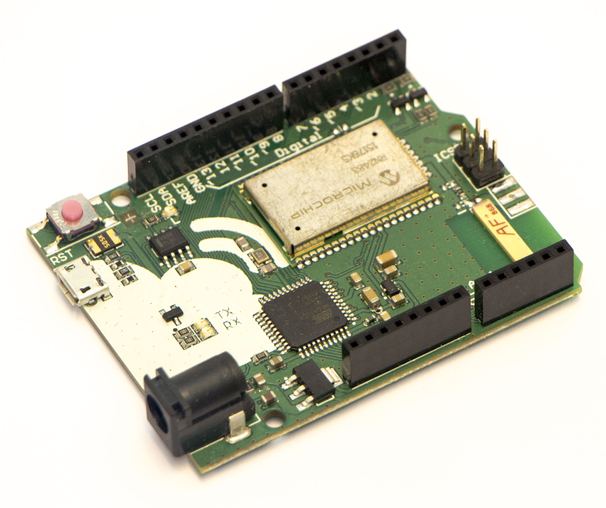 |
| preorder now |
The Things Uno I
The Arduino IDE
The Arduino IDE with the Things Uno library is required.
- Download and install Arduino IDE 1.6.8 or newer (Windows, Mac OS X or Linux)
- Download the latest The Things Uno Arduino library (Zip)
- Navigate in the Arduino IDE to: sketch > include library > add .ZIP Library and select the zip file from step 2.
Connect the Things Uno
- Connect the Things Uno to your computer with a Micro-USB cable
- Select: Tools > Board > Arduino Leonardo
- Select: Tools > Port > (The port that identifies as Arduino Leonardo)
Get the unique node EUI
The Device-EUI is the unique node address that is hard coded by Microchip into the LoRa module.
This address is used to register the Node in The Things Network database.
The Device-EUI can be retrieved from the node with the Get-Device-Info sketch.
- In the Arduino IDE, open: File > Examples > TheThingsUno > Get-Device-Info.ino
- Upload sketch without modification.
Uploading Sketch
- Click Sketch > Verify/Compile and make sure that compilation works (Arduino says Done compiling) Run Application
- Click Sketch > Upload (Arduino says Done uploading)
The Arduino IDE will give feedback when you verify or upload the code to a board. It should look similar to this:
Sketch uses 14,152 bytes (49%) of program storage space. Maximum is 28,672 bytes. Global variables use 1,253 bytes (48%) of dynamic memory, leaving 1,307 bytes for local variables. Maximum is 2,560 bytes.
Serial Monitor
The Things Uno talks to the computer over the Serial Port.
The data that is send is displayed with the Serial monitor of the Arduino IDE.
Using the Serial monitor makes it possible to monitor the proceedings of the Things Uno.
- Connect the Things Uno to your computer
Open the serial monitor in the Arduino IDE
Press the Serial monitor button or press Crtl + Shift + M
Receiving data on the Serial Monitor
“` Device Information
EUI: 0004A30B001B672E Battery: 3304 AppEUI: 0000000000000000 DevEUI: 0004A30B001B672E DevAddr: 00000000 Data Rate: 5 RX Delay 1: 1000 RX Delay 2: 2000
use the device
EUIto register the device for OTAA ”`Save the
EUI: 0004A30B001B672E(Device-EUI) for later.
The Things Network Control Utility
You need to register every application that sends data through The Things Network.
This is done with the ttnctl (The Things Network control utility) .
Download and install
- Download The Things Network control utility ttnctl (for Windows 64 bit/32 bit, Linux 64 bit/32 bit or Mac OS X.
- Extract the downloaded ZIP file to a convenient location, e.g. your user directory (
%USERPROFILE%on Windows or$HOMEon Mac OS X and Linux); - Verify that the command utility works by executing the command line utility:
./ttnctls-darwin-amd64
ttnctl controls The Things Network from the command line.
Usage:
ttnctl [command]
Create Account
To use the ttnctl tool, you need a user account. This is a personal account. Your login name is your e-mail address and you are free to choose a password of your choice.
- Create a new user account by executing:
ttnctl user create demo@thethingsnetwork.org- Now enter twice your password (the ).
- Login with your new account:
ttnctl user login demo@thethingsnetwork.org
ttnctl user create example@thethingsnetwork.org
password:
INFO User created
ttnctl user login example@thethingsnetwork.org
password:
INFO logged in as example@thethingsnetwork.org and persisted token in /user/<username>/.ttnctl/auths.json
Create Application
Users can create applications which have a unique identifier. Its the EUI number issued by The Things Network.
- Create your first The Things Network application:
ttnctl applications create "Hello world" - View your applications:
ttnctl applications. When you register a app, it is given an uniqueapplication-EUI. - Note that the
Application EUIand itsaccess keyare used to access the data from The Things Network later on this tutorial. - Use your newly created application:
ttnctl applications use <application-EUI>
ttn applications create 'Hello world'
INFO Application created successfully
ttn applications
INFO Found 1 application(s)
EUI Name Owner access Keys Valid
70B3D57ED0000002 Hello world example@thethingsnetwork.org vTFYb/DjtdnUAWUHaGKDw3Lt/3T4C9MiWLYRzSX+eBU= true
ttnctl applications use 70B3D57ED0000002
INFO You are now using application 70B3D57ED0000002.
Register Device
All devices on the network need to be registered in The Things Network database. In the application devices are registered and managed.
The Things Network supports the two LoRaWAN mechanisms to register devices: over the air activation (OTAA) and activation by personalization (ABP). It is strongly advised to use OTAA for production and ABP for development. This is because of the following benefits that OTAA has over ABP:
- APB uses a frame counter as protection against data spam. This counter counts both on hardware as on the network how much packages are send/received. When both counters match, access to the network is granted. While there is a way to bypass this issue, it makes the connecting insecure.
OTAA
- Look up your
device-EUI(8-byte Device-address) that you retrieved form your Things Uno.- The device EUI should be similar to this
02DE002B02DE002B.
- The device EUI should be similar to this
- Register your device:
ttnctl devices register <device-EUI> - Get your device information:
ttnctl devices info <device-EUI>
ttnctl devices register 02DE000002DE0000
INFO Generating random AppKey...
INFO Registered device
ttnctl devices info 02DE000002DE0000
Dynamic device:
AppEUI: 70B3D57ED000014B
{0x70, 0xB3, 0xD5, 0x7E, 0xD0, 0x00, 0x01, 0x4B}
DevEUI: 02DE000002DE0000
{0x02, 0xDE, 0x00, 0x00, 0x02, 0xDE, 0x00, 0x00}
AppKey: 527E0ABBE8BC0612C18A9D5457D93FD4
{0x52, 0x7E, 0x0A, 0xBB, 0xE8, 0xBC, 0x06, 0x12, 0xC1, 0x8A, 0x9D, 0x54, 0x57, 0xD9, 0x3F, 0xD4}
Not yet activated
ABP
- Choose your
Device-address(4-byte Device-address) that is not yet reserved. For example02DE002B. - Register your device:
ttnctl devices register personalized <Device-address> - Get your device information:
ttnctl devices info <Device-address>
ttnctl devices register personalization 02DE0000
INFO Generating random NwkSey and AppSKey...
INFO Registered personalized device
ttnctl devices info 02DE0000
personalized devivce:
DevAddr: 02DE0000
{0x02, 0xDE, 0x00, 0x00}
NwkSKey: 028F7B7A52BA029DE2F2C2087F8E016B
{0x02, 0x8F, 0x7B, 0x7A, 0x52, 0xBA, 0x02, 0x9D, 0xE2, 0xF2, 0xC2, 0x08, 0x7F, 0x8E, 0x01, 0x6B};
AppSKey: D6F3521E492C983D0B65A82DED12221C
{0xD6, 0xF3, 0x52, 0x1E, 0x49, 0x2C, 0x98, 0x3D, 0x0B, 0x65, 0xA8, 0x2D, 0xED, 0x12, 0x22, 0x1C};
FCntUp: 0
FCntDn: 0
The Things Uno II
Programming the Hardware
Earlier you registered your device with OTAA or ABP. Each of these registration methods joins the network in a different way.
Choose the right join method below for your hardware.
(OTAA)
- In the Arduino IDE, open File > Examples > TheThingsUno > hello-world-OTAA.ino
- Change your
appEuiandappKeyto the values of your device. - Copy/paste the pre made codes
( {0x70, 0xB3, 0xD5, 0x7E, 0xE0, 0xE0, 0x01, 0x4A} )values that ttnctl printed for you in the previous steps.
// Set your app Credentials
const byte appEui[8] = {0x70, 0xB3, 0xD5, 0x7E, 0xE0, 0xE0, 0x01, 0x4A};
const byte appKey[16] = {0x2B, 0x7E, 0x15, 0x16, 0x28, 0xAE, 0xD2, 0xA6, 0xAB, 0xF7, 0x15, 0x88, 0x09, 0xCF, 0x4F, 0x3C};
- Upload the sketch
(ABP)
- In the Arduino IDE, open: File > Examples > TheThingsUno > hello-world-ABP.ino
- Change your
devAddr,nwkSKeyandappSKeyto the values of your device. - Copy/paste the pre made codes
( {0x02, 0xDE, 0x00, 0x00} )values that ttnctl printed for you in the previous steps.
// Set your device address
const byte devAddr[4] = {0x02, 0xDE, 0x00, 0x00};
// Set your NwkSKey and AppSKey
const byte nwkSKey[16] = {0x02, 0x8F, 0x7B, 0x7A, 0x52, 0xBA, 0x02, 0x9D, 0xE2, 0xF2, 0xC2, 0x08, 0x7F, 0x8E, 0x01, 0x6B};
const byte appSKey[16] = {0xD6, 0xF3, 0x52, 0x1E, 0x49, 0x2C, 0x98, 0x3D, 0x0B, 0x65, 0xA8, 0x2D, 0xED, 0x12, 0x22, 0x1C};
- Upload the sketch
Serial Monitor
- Open the serial monitor in the Arduino IDE
receiving data on the Serial Monitor
Initializing... Version is RN2483 1.0.1 Dec 15 2015 09:38:09, model is RN2483 Sending: mac set adr on Sending: mac set pwridx 1 Sending: mac set dr 5 //for ABP Sending: mac set devaddr with 4 bytes Sending: mac set nwkskey with 16 bytes Sending: mac set appskey with 16 bytes Sending: mac join abp Personalize accepted. Status: 00000021 EUI: 0004A30B001B672E Battery: 3304 AppEUI: 0000000000000000 DevEUI: 0004A30B001B672E DevAddr: 02DE0000 //for OTAA Sending: mac set appeui with 8 bytes Sending: mac set deveui 0004A30B001B672E Sending: mac set appkey with 16 bytes Sending: mac join otaa Join accepted: accepted. Status: 00000421 EUI: 0004A30B001B672E Battery: 3304 AppEUI: 70B3D57ED000014A DevEUI: 0004A30B001B672E DevAddr: 1D86A4A Band: 868 Data Rate: 5 RX Delay 1: 1000 RX Delay 2: 2000 Setup for The Things Network completeAfter the initializing it will confirm every message being sent:
Sending: mac tx uncnf 1 with 1 bytes Successful transmission
Retrieving the data
Now that the hardware transmits the data to the network, it can be retrieved by the TTN MQTT broker. We’ll use Node-RED to retrieve the data from the TTN server.
Node-RED
Node-RED is a JavaScript-based server with a web GUI. The interface makes it possible to build a complete server by wiring flows together in a web interface. It is free and comes with lots of pre made plugins like API’s, online services and lots of ready to use tools.
- Host your own version of Node-RED.
Boot Node-RED by entering
node-redin your command line.node-red Welcome to Node-RED =================== 9 May 15:15:29 - [info] Node-RED version: v0.13.4 9 May 15:15:29 - [info] Node.js version: v4.4.3 9 May 15:15:29 - [info] Windows_NT 6.3.9600 x64 LE 9 May 15:15:29 - [info] Loading palette nodes 9 May 15:15:31 - [warn] ------------------------------------------ 9 May 15:15:31 - [warn] Failed to register 2 node types 9 May 15:15:31 - [warn] Run with -v for details 9 May 15:15:31 - [warn] ------------------------------------------ 9 May 15:15:31 - [info] Settings file : C:\Users\ludo\AppData\Roaming\npm\node_modules\node-red\settings.js 9 May 15:15:31 - [info] User directory : C:\Users\ludo\.node-red 9 May 15:15:31 - [info] Flows file : C:\Users\ludo\.node-red\flows_Ludo-ROG.json 9 May 15:15:31 - [info] Creating new flow file 9 May 15:15:31 - [info] Starting flows 9 May 15:15:31 - [info] Started flows 9 May 15:15:31 - [info] Server now running at http://127.0.0.1:1880/
Navigate to your browser and enter the url (http://127.0.0.1:1880/) that is given by the Node-RED application. You should see the following web page:
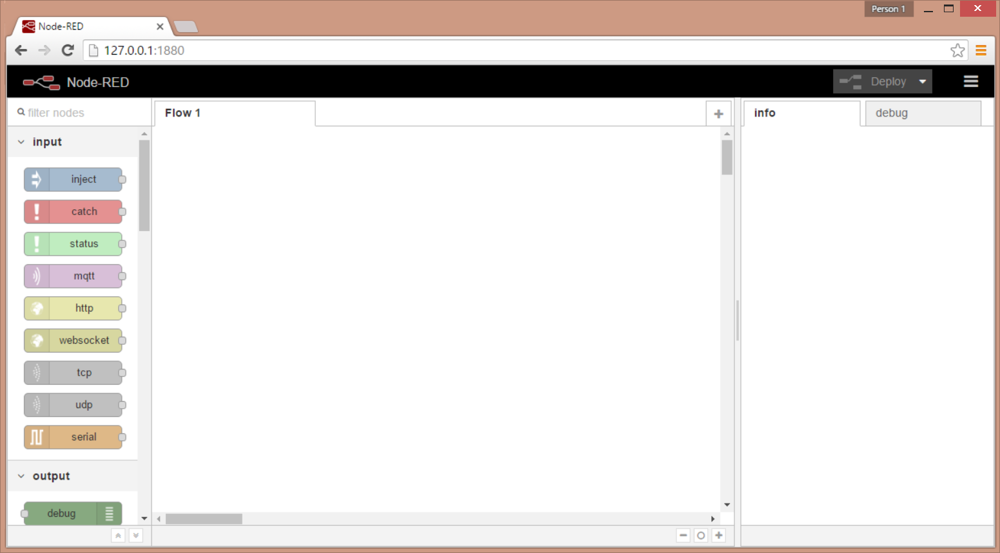
Building the data flow
- Open up your Node-RED.
Now build the flow by placing the following block from the left component window in your sketch:
Get the mqtt component: input > ‘mqtt’.
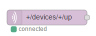
Get your json component: function > ‘Json’.
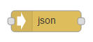
Get your function component: function > ‘function’
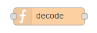
Get your Debug component: output > ‘Debug’
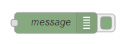
Now connect all the components together as listed above.
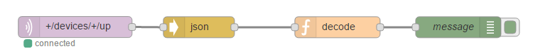
Configure the
mqtt component:- Double-click the
mqtt component - Click on the pencil icon
under connection:* Enter for server:
staging.thethingsnetwork.org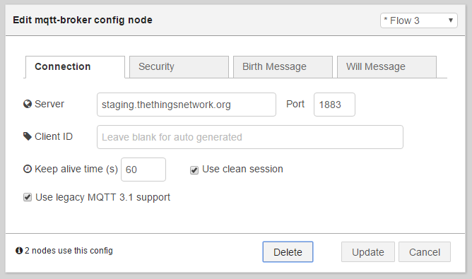
under security: Enter for Username:
your AppEuiunder security: Enter for password:
the corresponding access KeyThe
AppEuiandaccess keycan be looked up in the ttnctl tool.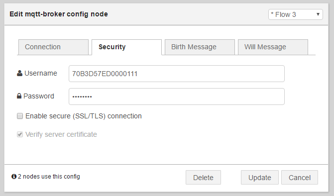
Click the update button
Enter for Topic:
+/devices/+/up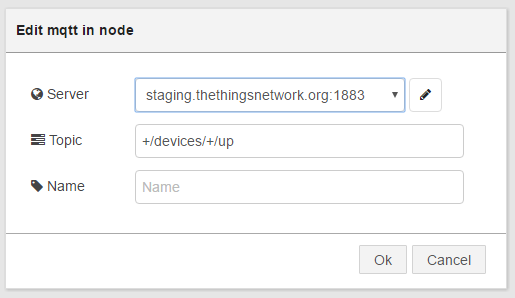
- Double-click the
Configure the
function component- Double-click the
function component - add the following code to your function
Click the Ok button
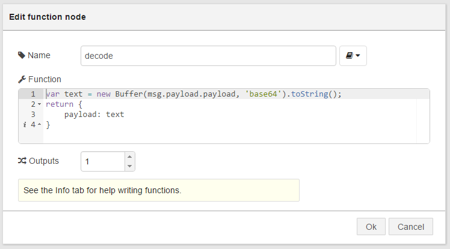
var text = new Buffer(msg.payload.payload, 'base64').toString(); return { payload: text }- Double-click the
Click the Deploy button at the right top of your window. Your data flow should look
You should get a message that the sketch is successfully deployed.
Retrieve the data
Now that the Things Uno is sending data it’ll be received in the Node-RED data flow.
Make sure that the green checkbox on the
Debugblock is checked.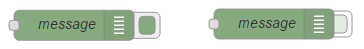
Make sure that the mqtt input block reports:
connected.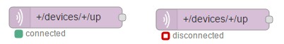
Navigate to the right side of the Node-RED page and open the
Debugtab.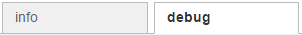
Now you should see the messages that the node transmits.